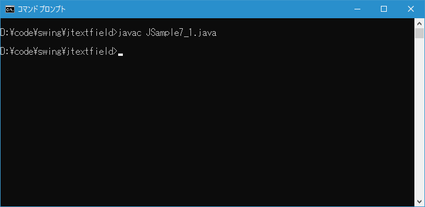
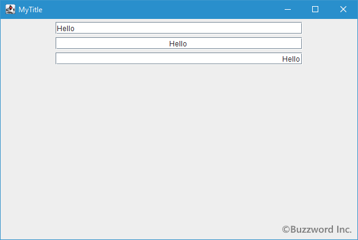

テキストフィールド内でのテキストの水平位置(左詰、中央、右詰)を設定する
テキストフィールドでは利用者にテキストを入力してもらうことができますが、入力されたテキストがテキストフィールド内で右詰で表示されるようにするなど水平位置を指定することができます。ここではテキストフィールド内での文字列の位置を設定する方法について解説します。
入力されたテキストが表示される水平位置を設定する
テキストフィールドで入力されたテキストが表示される水平方向の位置を指定するには JTextField クラスで用意されている setHorizontalAlignment メソッドを使います。
public void setHorizontalAlignment?(int alignment)
テキストの水平配置を設定します。 有効なキーは次のとおりです。
JTextField.LEFT
JTextField.CENTER
JTextField.RIGHT
JTextField.LEADING
JTextField.TRAILING
配置が設定されるとinvalidateとrepaintが呼び出され、PropertyChangeイベント(horizontalAlignment)がトリガーされます。
パラメータ:
alignment - 配置方法
例外:
IllegalArgumentException - alignmentが有効なキーでない場合
引数には水平方向の位置を表す値を設定します。設定可能な値は次の通りです。
JTextField.LEFT 左詰 JTextField.CENTER 中央 JTextField.RIGHT 右詰 JTextField.LEADING 左詰 JTextField.TRAILING 右詰
※各値は javax.swing.SwingConstants インターフェースで定義されており、 JTextField クラスは SwingConstants インターフェースを実装したクラスです。
※ LEADING (先頭)と TRAILING (末)は利用している言語によって位置が変わります。日本語や英語のように左から右へ文字を表示する場合は LEADING が左詰で TRAILING が右詰ですが、右から左へ文字を表示するのが普通の言語の場合には LEADING が右詰で TRAILING が左詰となります。
実際の使い方は次のようになります。
JTextField text = new JTextField(); text.setHorizontalAlignment(JTextField.CENTER);
サンプルプログラム
それでは簡単なサンプルプログラムを作って試してみます。テキストエディタで次のように記述したあと、 JSample7_1.java という名前で保存します。
import javax.swing.JFrame;
import javax.swing.JTextField;
import javax.swing.JPanel;
import java.awt.Container;
import java.awt.BorderLayout;
class JSample7_1 extends JFrame{
public static void main(String args[]){
JSample7_1 frame = new JSample7_1("MyTitle");
frame.setVisible(true);
}
JSample7_1(String title){
setTitle(title);
setBounds(100, 100, 600, 400);
setDefaultCloseOperation(JFrame.EXIT_ON_CLOSE);
JTextField text1 = new JTextField("Hello", 40);
JTextField text2 = new JTextField("Hello", 40);
text2.setHorizontalAlignment(JTextField.CENTER);
JTextField text3 = new JTextField("Hello", 40);
text3.setHorizontalAlignment(JTextField.RIGHT);
JPanel p = new JPanel();
p.add(text1);
p.add(text2);
p.add(text3);
Container contentPane = getContentPane();
contentPane.add(p, BorderLayout.CENTER);
}
}
次のようにコンパイルを行います。
javac JSample7_1.java

コンパイルが終わりましたら実行します。
java JSample7_1
テキストフィールドを 3 つ追加しました。 1 つ目は引数なしのコンストラクタで作成したテキストフィールド、 2 つ目は入力されたテキストの水平位置として中央を設定したテキストフィールド、 3 つ目は入力されたテキストの水平位置として右詰を設定したテキストフィールドです。

数字を入力してもらう場合には右詰めで入力してもらうのが一般的ですので、こういったケースには水平位置として右詰を設定されてください。
-- --
テキストフィールド内での文字列の位置を設定する方法について解説しました。
( Written by Tatsuo Ikura )

著者 / TATSUO IKURA
初心者～中級者の方を対象としたプログラミング方法や開発環境の構築の解説を行うサイトの運営を行っています。